Plan wycieczki
Zwiedzone miejsca
- Suwałki
- Mosty w Stańczykach
- Jezioro Hańcza
- Warmińska Kolejka Wąskotorowa
- Ełk
- Augustów
- Troki
- Wilno
- śluza Kudrynki
- meczet w Bohonikach
- meczet w Kruszynianach
- zagroda pokazowa żubrów w Kopnej Górze
- Biebrzański Park Narodowy
- Grajewo
- Twierdza Boyen
- Wilczy Szaniec
- spływ kajakowy Krutynia - Ukta
- Olsztyn
Czas wycieczki: 9 dni
Skład osobowy: 6 dorosłych, 2 dzieciaki
Przejechane kilometry: około 2800
Punkt początkowy i końcowy: Myślenice
Pomysł na tą wycieczkę chodził za nami już od dawna i bardzo się cieszę, że w końcu udało nam się wybrać do tej części Polski. Spotkaliśmy taką ilość zwierzaków, że chyba wystarczy nam aż do końca tego roku. Widzieliśmy żubry, łosie, całą masę bocianów, żurawie, sarny, zimorodka, całe rodziny łabędzi czy kaczek. No i bardzo dużo motyli. W jeden dzień udało nam się również wyskoczyć na Litwę. Pomimo intensywnego tempa zwiedzania, wróciliśmy z naładowanymi akumulatorami i mnóstwem wspomnień. Mieliśmy dwie bazy wypadowe: pierwszą w Gibach (większość wyjazdu), gdzie dziewczynki spały w domku na drzewie a drugą w Jerutkach.
Plan wycieczki
Szczegóły planu
Dzień pierwszy
- 11:00 - wyjazd
- 18:00 - nocleg
Dzień drugi
- 10:00 - Suwałki, zwiedzanie do 13:00
- 14:00 - Mosty w Stańczykach
- 16:00 - Jezioro Hańcza
Dzień trzeci
- 10:00 - Wigierska Kolejka Wąskotorowa
- 14:00 - Ełk
- 17:00 - Augustów
Dzień czwarty
- 8:00 - wyjazd
- 10:00 - przyjazd do Troków, zwiedzanie do 11:00
- 11:30 - przyjazd do Wilna i zwiedzanie do wieczora
Dzień piąty
- 10:00 - śluza Kudrynki
- 12:00 - meczet w Bohonikach
- 13:00 - meczet w Kruszynianach i obiad w Tatarskiej Jurcie
- 16:00 - zagroda pokazowa żubrów w Kopnej Górze i powrót
Dzień szósty
- 9:00 - Biebrzański Park Narodowy do 11:30
- 12:30 - Muzeum Mleka w Grajewie i obiad, powrót
Dzień siódmy
- 7:00 - wyjazd
- 9:00 - Twierdza Boyen, zwiedzanie do 11:00
- 12:00 - Wilczy Szaniec, zwiedzanie do 14:00, nocleg w Jerutkach
Dzień ósmy
- 9:00 - 13:00 - spływ kajakowy Krutynia - Ukta
- 14:30 - Olsztyn, powrót
Dzień dziewiąty
- 9:00 - powrót do domu
Plan wycieczki
Trasa
Zwiedzanie
Suwałki, Mosty w Stańczykach i Jezioro Hańcza
Wakacje zaczęliśmy od Suwałk, gdzie wyruszyliśmy na poszukiwanie krasnoludków. Doprowadziły nas one do domu, w którym urodziła się i mieszkała przez 7 pierwszych lat swojego życia Maria Konopnicka. Weszliśmy do środka i odkryliśmy tam niesamowitą wystawę poświęconą jej życiu i twórczości. Jest pięknie urządzona, z dużą dozą wyobraźni. Po przejściu reszty szlaku krasnoludków i obiedzie, ruszyliśmy w kierunku mostów kolejowych w Stańczykach. To dwa mosty kolejowe, które powstały w latach 20-tych XX wieku i są jednymi z najwyższych w Europie. Pod nimi przepływa rzeka, w której roi się od ciemnoniebieskich ważek - spędziliśmy z nimi dobre pół godziny, zanim mogliśmy udać się do nastepnego punktu wycieczki. A było nim jezioro Hańcza, które jest najgłębszym jeziorem w Polsce. Wyszliśmy na wieżę widokową ukrytą w lesie, ale nie spędziliśmy na niej zbyt wiele czasu, bo komary postanowiły zaatakować z pełną mocą.
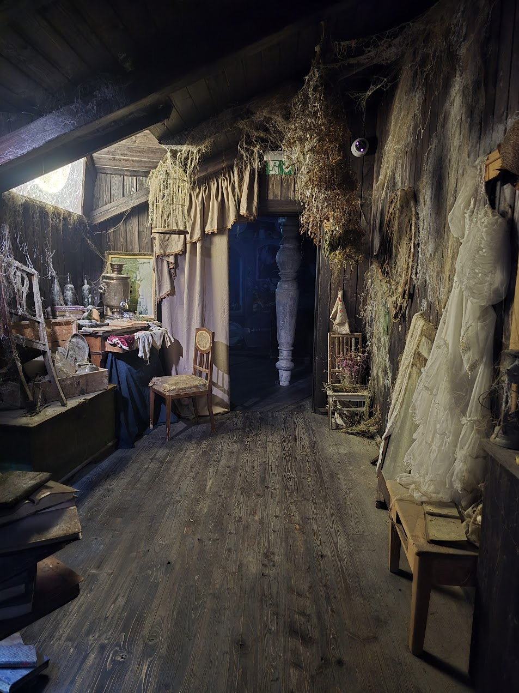
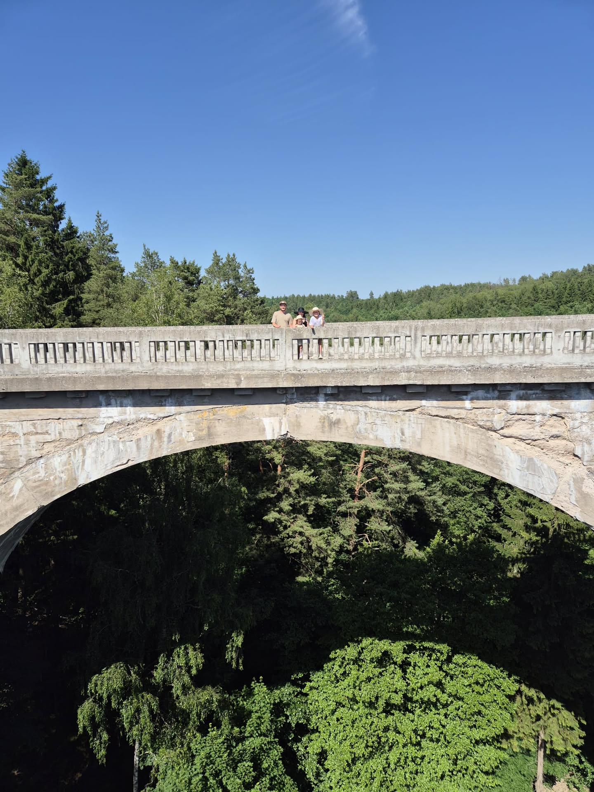
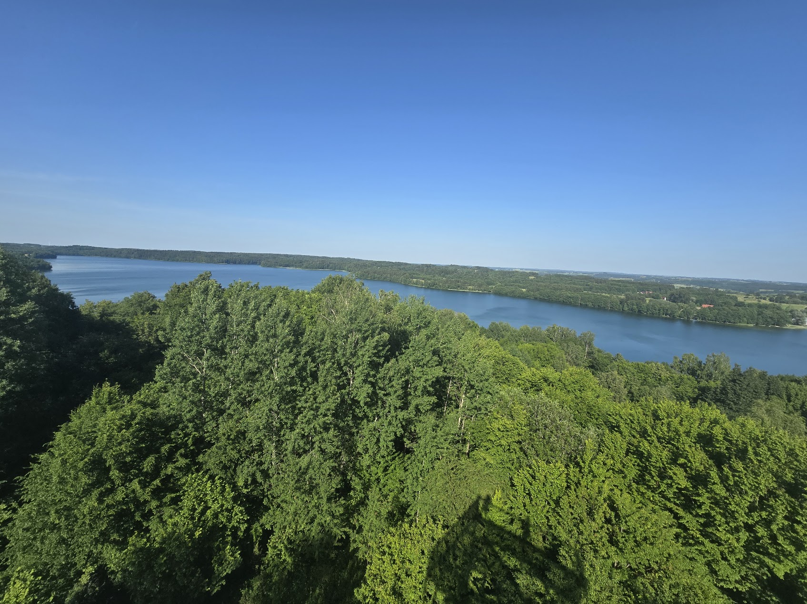
Zwiedzanie
Wigierska Kolejka Wąskotorowa, Ełk i Augustów
Drugi dzień zaczęliśmy od przejażdżki Wigierską Kolejką Wąskotorową. Przyznam, że skusił mnie opis na stronie internetowej tej atrakcji, mówiący, że jej trasa przebiega wzdłuż nabrzeży jeziora Wigry. W rzeczywistości jezioro z kolejki widać było raz, a drugi jak podeszliśmy kawałek podczas postoju. Potem kolejka skręca w puszczę, co ma sens, bo dawniej ta trasa służyła do zwożenia drewna. Nastęny punkt na trasie to Ełk, gdzie odwiedziliśmy Kopernika a także Muzeum Historyczne. Nie dość, że jest tam naprawdę dużo pociągów, do których można wsiąść, to jeszcze jeden z pracowników zaproponował nam oprowadzanie. Pomimo późnej godziny opowiedział nam o wszystkich smaczkach i ciekawostkach w zbiorach muzeum. Poznaliśmy też ich maskotkę - zająca, który postanowił z nimi zamieszkać. Planowaliśmy zakończyć ten dzień w Albatrosie w Augustowie (z powodu dużego sentymentu mojego męża dla tego miejsca), ale po krótkim czasie spędzonym w tej restauracji okazało się, że jedna z naszych córek zostawiła plecak na stacji kolejki wąskotorowej, więc ruszyliśmy z odsieczą i misją, żeby odzyskała swoje pluszaki i resztę skarbów, które miała ze sobą. Wszystko się udało a nawet starczyło czasu, żeby odpocząć nad jeziorem niedaleko naszego wynajętego domku/
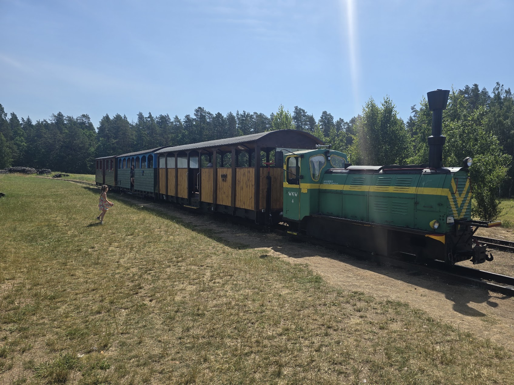
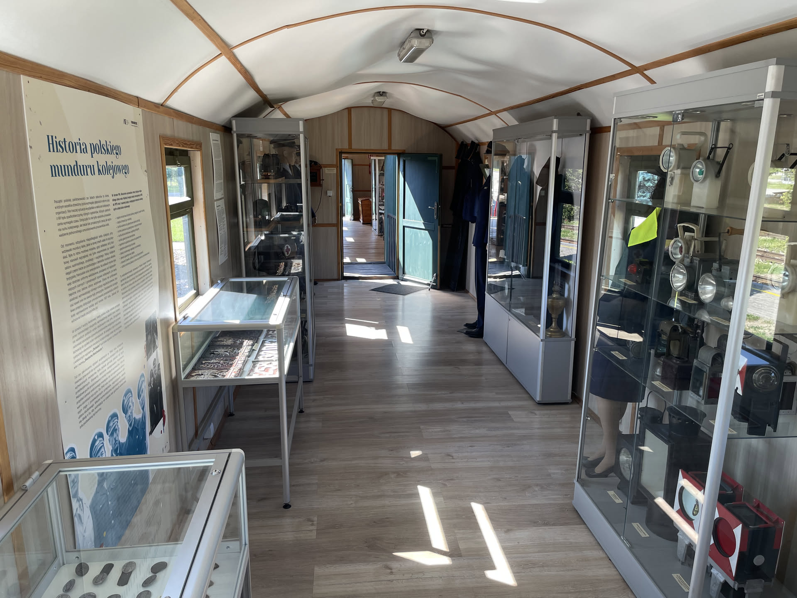
Zwiedzanie
Troki i Wilno
Skoro mieszkaliśmy tylko 15 minut od granicy z Litwą, postanowiliśmy wyskoczyć na jeden dzień do Wilna. Po drodze zatrzymaliśmy się w Trokach, żeby zobaczyć zamek na jeziorze Galwe. Trafiliśmy na idealną porę roku, bo mogliśmy z bliska zobaczyć dużo małych ptaków wraz z rodzicami" gągoły, łabędzie, kaczki a nawet perkozy. Po krótki spacerze pojechaliśmy do Wilna i tam przeszliśmy przez starówkę, wcześniej wspinając się na Wzgórze Trzech Krzyży (co było niezłym wyzwaniem w 35 stopniowym upale). Na położony nieopodal zamek wyjechaliśmy już kolejką. Spacerując dotarliśmy do Ostrej Bramy, znaleźliśmy również miejsce, gdzie był więziony Adam Mickiewicz. Wracając zobaczyliśmy jeszcze Uniwersytet Wileński, kościół świętej Anny (wygląda bardzo ciekawie z tymi wszystkimi dekoracjami zrobionymi z cegieł) oraz bazylikę archikatedralną. W międzyczasie zjedliśmy też pyszny obiad, mogę śmiało polecić litewską kuchnie - w tym upale nie mogłam trafić lepiej, niż na litewski chłodnik.

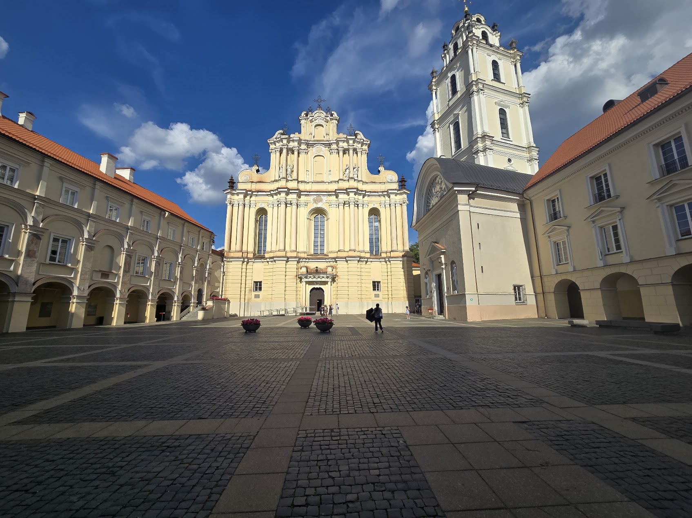
Zwiedzanie
Śluza Kudrynki i Duży szlak tatarski
Wyruszając w kierunku śluzy nawigacja podpowiedziała nam alternatywną, szybszą drogę. W rzeczywistości nie była szybsza i jechaliśmy 40 minut przez środek lasu szutrem - ale z drugiej strony trafiliśmy na ścieżkę edukacyjną o Obławie Augustowskiej, więc myślę, że można puścić w zapomnienie zarówno dodatkowe minuty jak i fakt, że nasz samochód wyglądał po tej trasie jakbyśmy odwiedzili Saharę. Tak czy inaczej po dotarciu do śluzy Kudrynki okazało się, ze mamy sporo szczęścia bo akurat dwie łódki czekały na przeprawę. Mieliśmy więc okazję zobaczyć na własne oczy zasady działania śluz. Kiedy ruszyliśmy dalej, trochę się pogubiliśmy (ciężko tam było z zasięgiem a zapomnieliśmy pobrać mapy offline) ale finalnie udało się dotrzeć do pierwszego meczetu na szlaku tatarskim - czyli meczetu w Bohonikach. Nie weszliśmy do środa, bo była tam już cała grupa a nie chciało nam się czekać, aż skończą. Obejrzeliśmy go z zewnątrz i pojechaliśmy do następnego meczetu, który znajduje się w Kruszynianach. Ten spodobał się nam bardziej więc postanowiliśmy poczekać na następne wejście i w międzyczasie zjeść obiad w Tatarskiej Jurcie. Wszystko było pyszne a my, najedzeni i gotowi na dalsze zwiedzanie (lub czekanie) wróciliśmy do meczetu. Udało nam się wejść do środka i posłuchać historii Tatarów w Polsce oraz opowieści o ich religii i zwyczajach. Na zakończenie dnia wpadliśmy jeszcze do pokazowej zagrody żubrów w Kopnej Górze, gdzie dbają o przywrócenie tego gatunku. Wypatrzyliśmy kilka żubrów, ale większość była schowana w lesie, zgromadzona wokół cielaka, który niedawno pojawił sie na świecie.
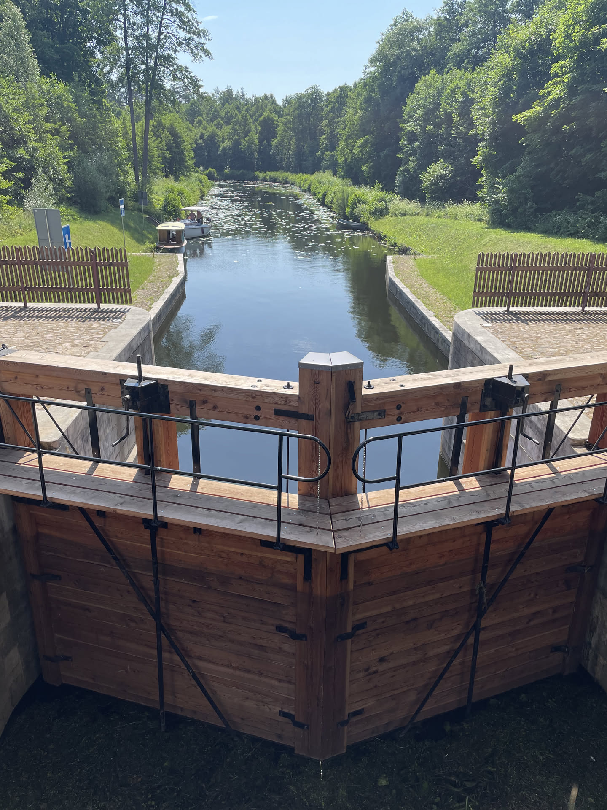
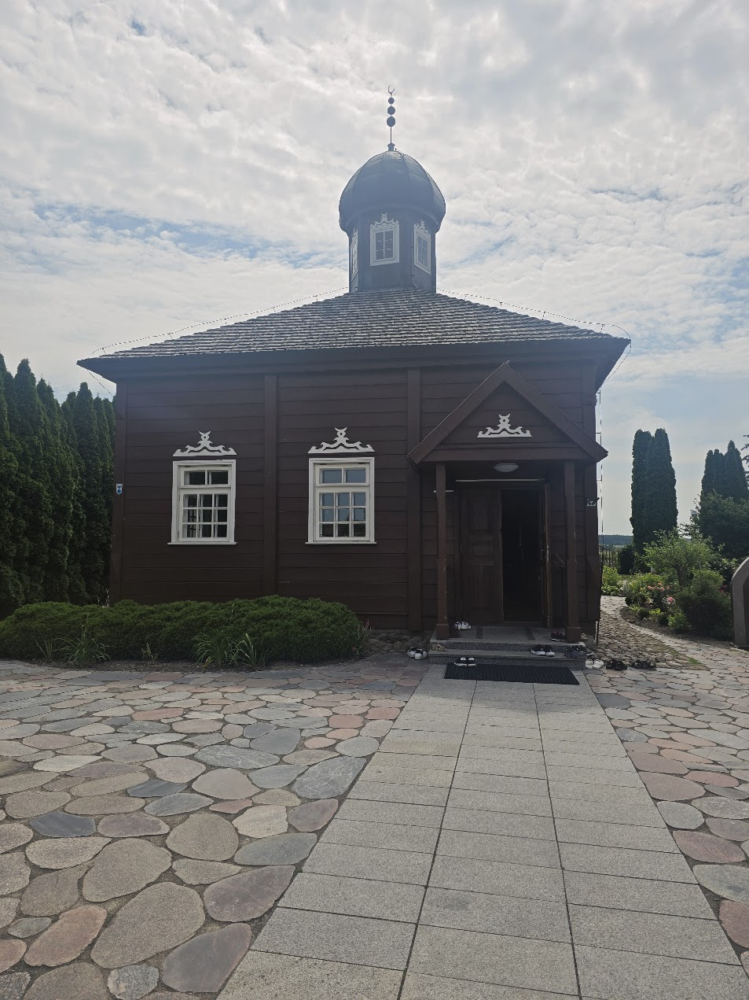
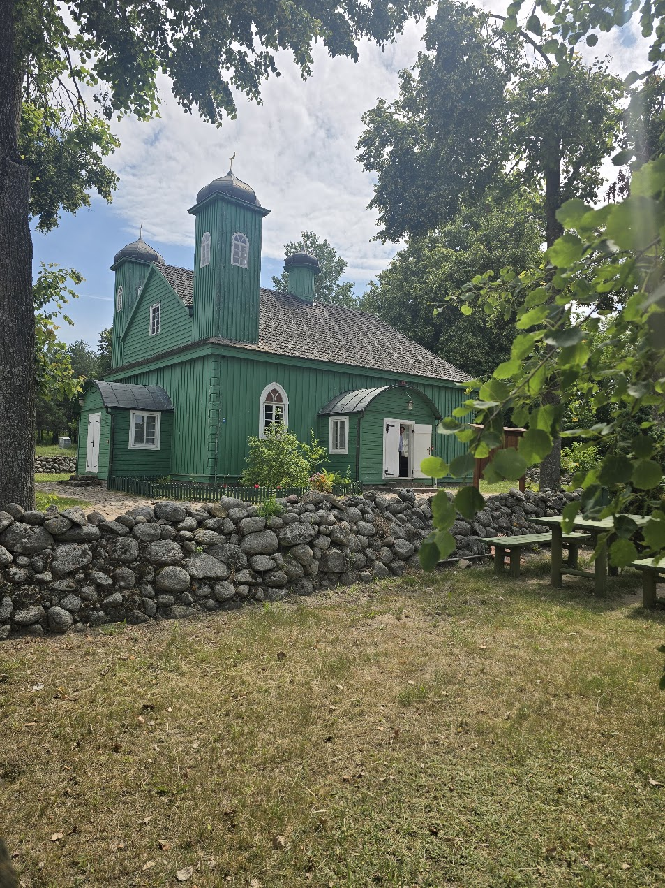
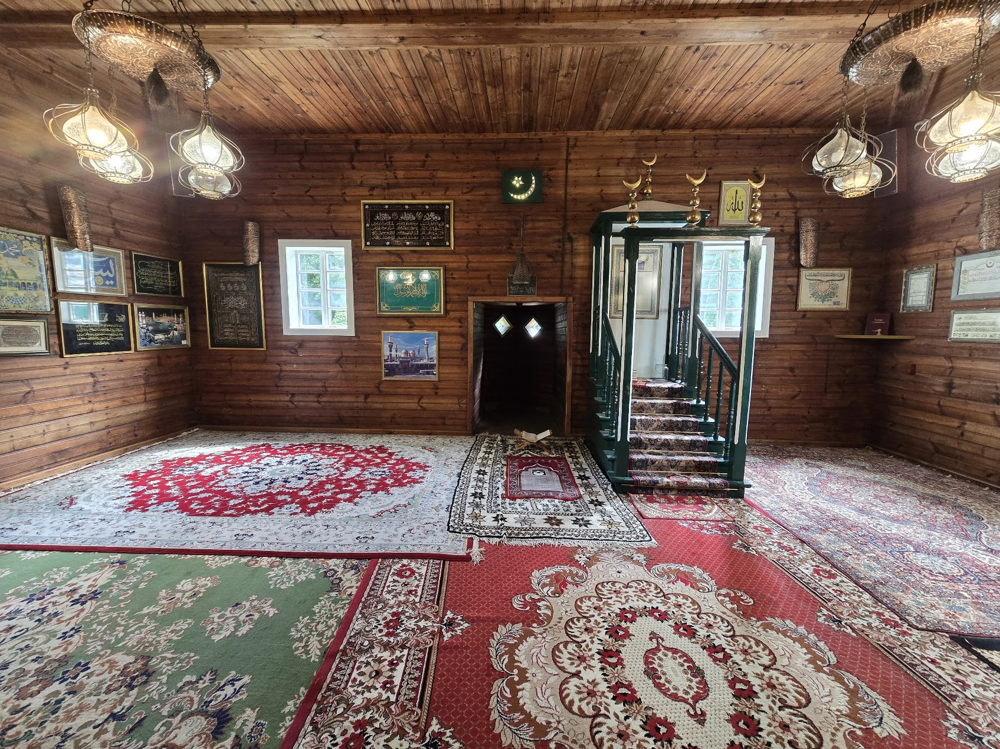
Zwiedzanie
Biebrzański Park Narodowy i Grajewo
Do Biebrzańskiego Parku Narodowego chcieliśmy wybrać się o trochę późniejszej godzinie, ale zapowiadali burze więc postanowiliśmy się zebrać szybciej. Wybraliśmy szlak, który startuje w Nowym Lipsku i prowadzi przez pieszą przeprawę wodną. Niestety już na początku tego szlaku zobaczyliśmy informację o zamkniętej przeprawie z powodu zbyt niskiego poziomu wody w Biebrzy. Postanowiliśmy, że dotrzemy zatem do brzegu Biebrzy a potem wrócimy. Szlak prowadził nas drewnianymi kładkami nad mokradłami i w towarzystwie bardzo dużej ilości motyli. Kilka razy udało nam się wypatrzeć i usłyszeć pokląskwę. Po dotarciu do przeprawy i przedyskutowaniu jak działa oraz przekonaniu dzieciaków, że nie byłoby najlepiej utknąć na mieliźnie na środku rzeki, wróciliśmy tą samą trasą. Drugim i ostatnim przystankiem tego dnia było Grajewo. Na początku poszliśmy zobaczyć Muzeum Mleka, dzieciaki dobrze się tam bawiły, jest sporo interaktywnych ekspozycji oraz film o lokalnej krowie i innych maskotkach. Potem zrobiliśmy sobie krótką przerwę w parku, dziewczyny spędziły ją na placu zabaw a mój mąż na oglądaniu sprzętu militarnego, który jest tam postawiony.
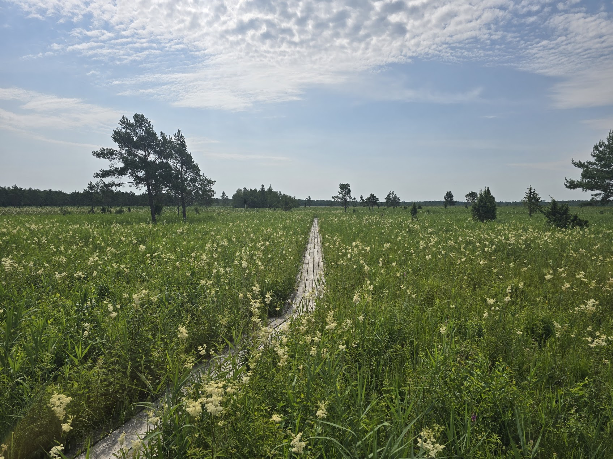
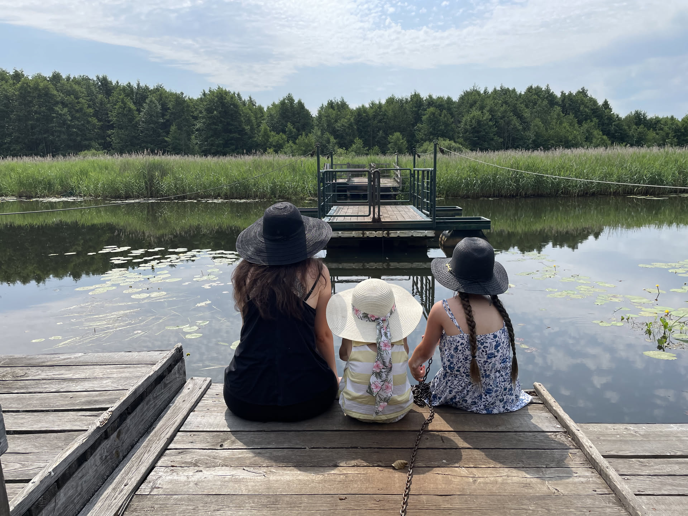
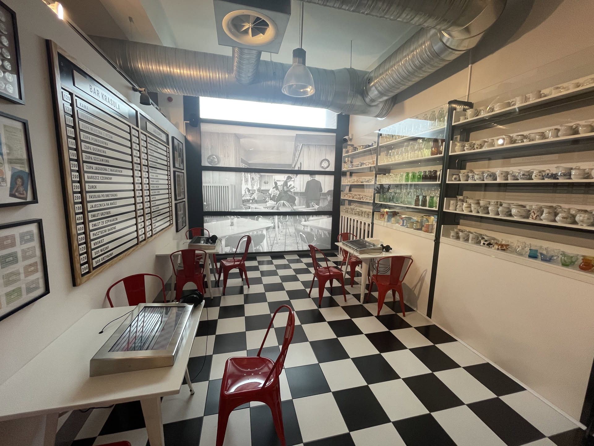
Zwiedzanie
Twierdza Boyen i Wilczy Szaniec
Rano opuściliśmy naszą bazę wypadową w Gibach i udaliśmy się na Mazury. Piewrszym punktem tego dnia było zwiedzanie Twierdzy Boyen. Jest to spore, choć trochę zaniedbnane miejsce. Dla dzieciaków jest tu przygotowana gra terenowa, która polega na szukaniu skrzatów. Niektóre z nich były naprawdę nieźle ukryte - po znalezieniu odpowiedniej ilości w kasie można odebrać mały upominek. Po wyjściu dziewczyny namówiły nas na wejście do parku linowego, więc wyjazd od Wilczego Szańca trochę się przesunął. W Wilczym Szańcu, czyli w miejscu, gdzie podczas II Wojny Światowej Hitler stworzył kompleks bunkrów, zgodnie z poleceniami znalezionymi w sieci, zdecydowaliśmy się na audioprzewodniki. Zastanawialiśmy się, czy będzie w porządku dla naszej młodszej, sześcioletniej córki, ale jest nagrany w tak interesujący sposób, że wysłuchała całej historii bez marudzenia, że ona to w sumie się już nudzi. Sam kompleks jest naprawdę zadbany i ciekawy a jeśli ktoś nie chce decydować się na audioprzewodnik, to przy każdym budynku (lub pozostałości po nim) dostępne są tabliczki z opisem danego miejsca.
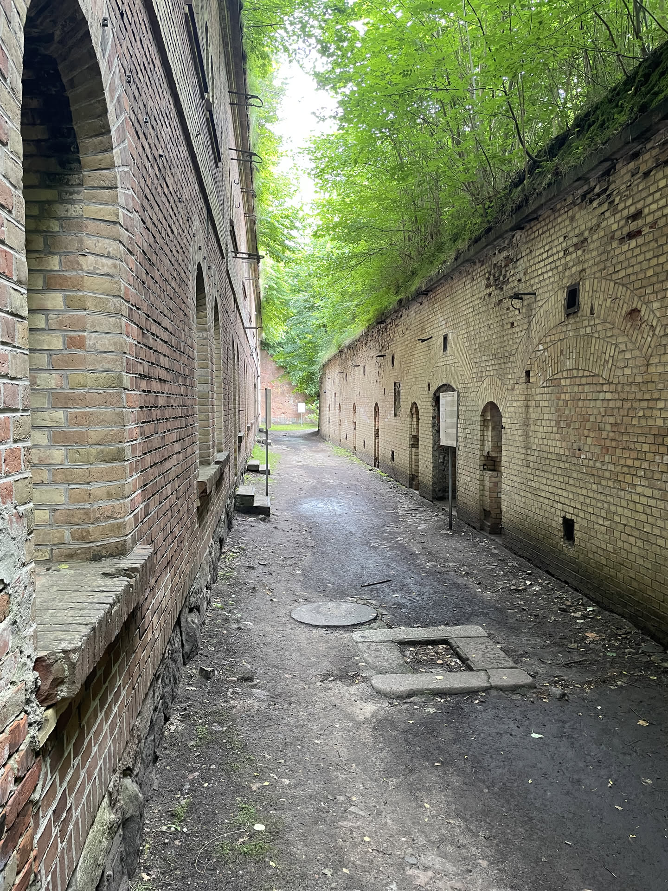
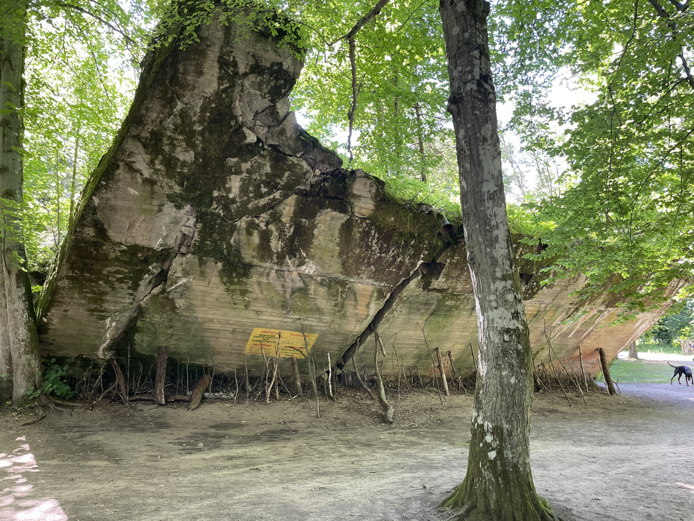
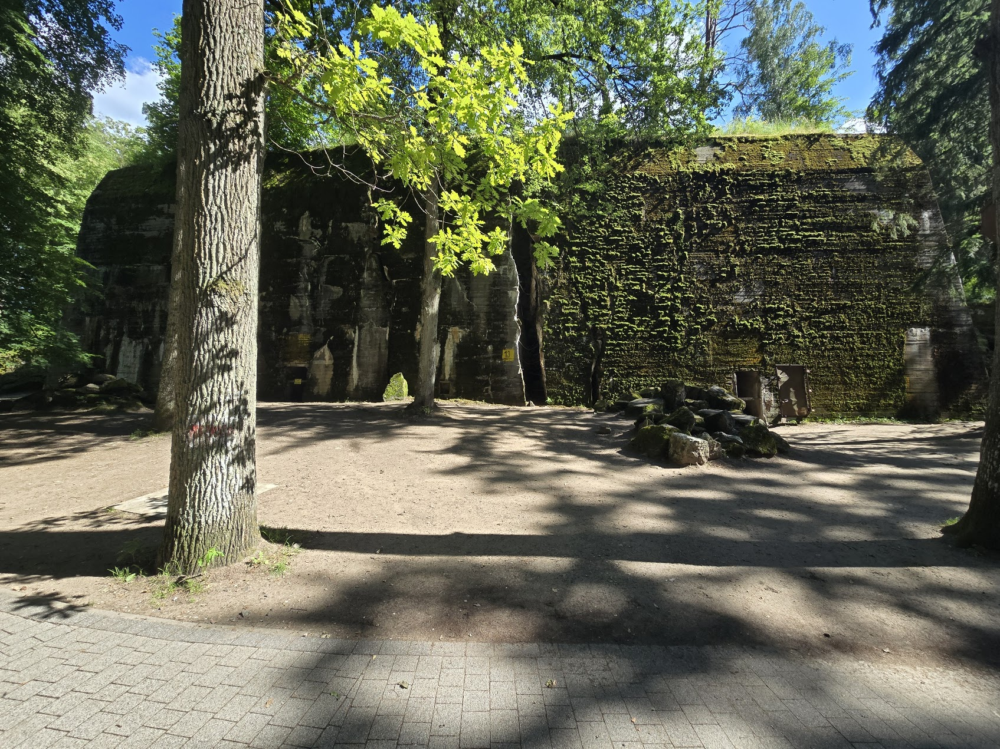
Zwiedzanie
Spływ Kajakowy i Olszytyn
Ostatni dzień wakacji zaczęliśmy od spływu kajakowego po Kurtyni. Czytaliśmy, że to jeden z najbardziej malownicznych spływów i muszę przyznać, że było pięknie. Spotkaliśmy rodziny łabędzi, kaczek, gągołów, zimorodka a nawet krowę w rzece. Pod koniec spływu zatrzymaliśmy się na domowe rogaliki z jagodami, które sprzedawane są przy brzegu. Pogoda zaczynała powoli się psuć, więc skoczyliśmy jeszcze do Olsztyna i tam spacerem przez starówkę, obiadem i lodami zakończyliśmy ten dzień. Kolejny dzień upłynął nam na powrocie do domu. Podlasie, Litwa, Mazury i Warmia zostawiły nam poczucie, że czas tutaj płynie trochę wolniej oraz odczucie, że byliśmy bardzo blisko natury.
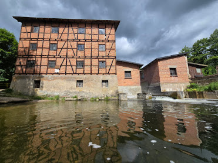
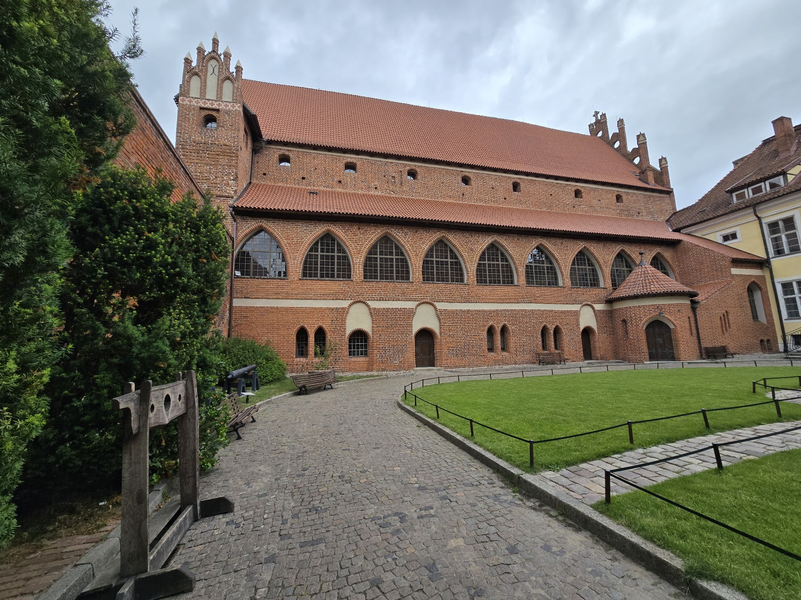